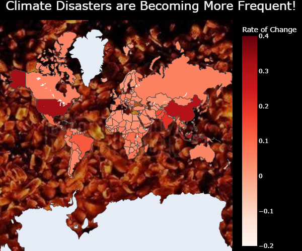
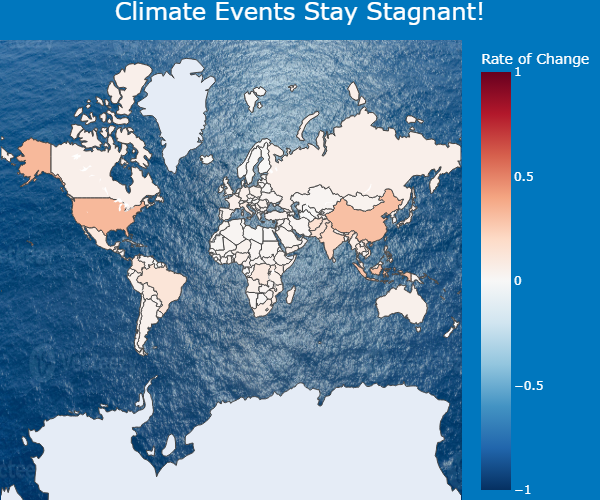

Proposition: Natural Disasters are becoming more frequent around the world.
FOR the Proposition

Design Decisions and Rationale:
- Used a continuous red scale to try to persuade the user that all rates of change even small ones appear to have an effect due to the coloring as only negative rates of change appear white. This has deceptive rating of -1.5 because it does make use of color where there is no effect to persuade the user there is one.
- Used the color red for the continuous scale to have the effect that climate events are getting worse and is related to climate change i.e. fire. This has a deceptive rating of -.5 because it is not extremely deceptive and is more cognintive trick
- Used an uneven scale from -.2 to .4 to make even small positive slopes appear red and to have an increase in frequency. This has a deceptive rating of -1 because 0 isn't centered on the scale and is not called out but the reader could still read this on the visualization.
- Use of Background: used background of embers for plot to give the impression that the world is on fire and that climate change is having an effect on the frequency of natural disasters. This has a deceptive rating of 0 because it is just adding effect and is not manipulating the data.
- Use of language: Used a bold title claiming that climate disasters are becoming more frequent to draw attention to the graph and play along with the aggresive theme. Used the word increase instead of change to subtly point the reader towards the fact that events are increasing in frequency. This has a deceptive rating of -.5 because not all rates are increasing there are some that are negative.
AGAINST the Proposition

Design Decisions and Rationale:
- Used a diverging scale with 0 as a midpoint to accurately portray most of the countries in the world have around a 0 rate of change in frequency of cliamte disasters. This has an earnest score of .5 because 0 rate of change means that there is no relationship between frequency and time but the median rate of change is not 0.
- The color of the continuous scale is red blue to portray the effect of hot cold in climate change. This has an earnest score of 1.5 because red and blue is an accurate pick for a diverging color scale and is able to accurately show the median.
- I used a balanced color range of -1 to 1 so that the rates of change which I knew had a range of -.2 to .4 would be more closer to 0 while not being to obvious I extended range. This has an earnest score of 0 because I did choose this range for the purpose that more points would appear in the middle but it does equally give the chance for magnitude of the same amount in the positive and negative direction.
- Use of background: used a background of the ocean to have a calming effect on the reader and to keep with the theme that climate events are not getting worse along with the calm blue background to match the ocean. This has an earnest score of 2 because I am not trying to deceive the reader I am just adding an ocean to where there is water on the map.
- Use of language: used nuetral language such as stagnant and change that implies that there is no dramatic effect in the graph. This has an earnest score of 1.5 because there is not really a huge effect in the graph and the verbage matches this.
Final Reflection
Overall, the design process was not straightforward but it was also not incredibly difficult. I picked my dataset because I have had quite a bit of experience working with climate change data from my SYN classes through seventh college. So, I picked climate change and figured there would some good information in the table that contained information about climate disasters. This dataset caught my eye and so once I openened it and saw that there was time series data for climate disasters in each country I knew I wanted to look at how disasters have changed over time. At first I was looking at how overall cumulating across the globe climate disasters have changed over time but it was hard to make two good points for opposite sides. So I pivoted and decided to see what mapping the disasters for each country would look like as I had some interest in geospatial data. That's when I decided to combine the two ideas and look at how the frequency of disasters changed over time for each country. I melted the dataframe to put the years as values in a column and then grouped by country applyting my own function that created a linear regression model for time vs frequency for that country and returned the slope of that model. I then geospatially plotted all the slopes using plotly and decided on the design elements I'd include.
Picking the design elements was a lot trickier of a task than cleaning the data and creating the basic visual. I knew for sure that playing with the color scale could drastically change the way the visual could be portrayed which was a basis for most of my design decisions. For the first one that supports the proposition I knew that using a continuous color scale could be particularly persuading as it made most countries look like events were increasing in frequency even if it was by minimal amount. I carefully crafted the color scale to make it as persuading as possible with even a few deceptive tricks. I also used background pictures as strong verbage to suggest to the reader that the frequency is increasing a lot all over the world. It suprised me how easy this was to do especially since some of these deceptive tricks were the default options for the plot.
For the second plot against the proposition I knew a diverging color scale would be the most accurate way to depict no change as there is a easily decipherable middle point that could be easily seen in the visual this could be seen as a more earnest approach vs. the continuous scale which was the default option. I added some more nuetral colors and language to make there seem like there is really no trend in the data. What suprised me about this was the fact that there more work involved in making the visal nuetral and more earnest than easily trying to prove one point.
In conclusion, I'd say it's very easy to make a deceptive visualization with little work and can even be done by acciedent with some default options. Color is one thing that I think can be free reign for the artist to choose but the scale is one part where I would draw a line and say the scale needs to be reasonable, understandeable, and not intentionally deceptive. The reader needs to be given a free chance to make their own opinion given the visual and the data.